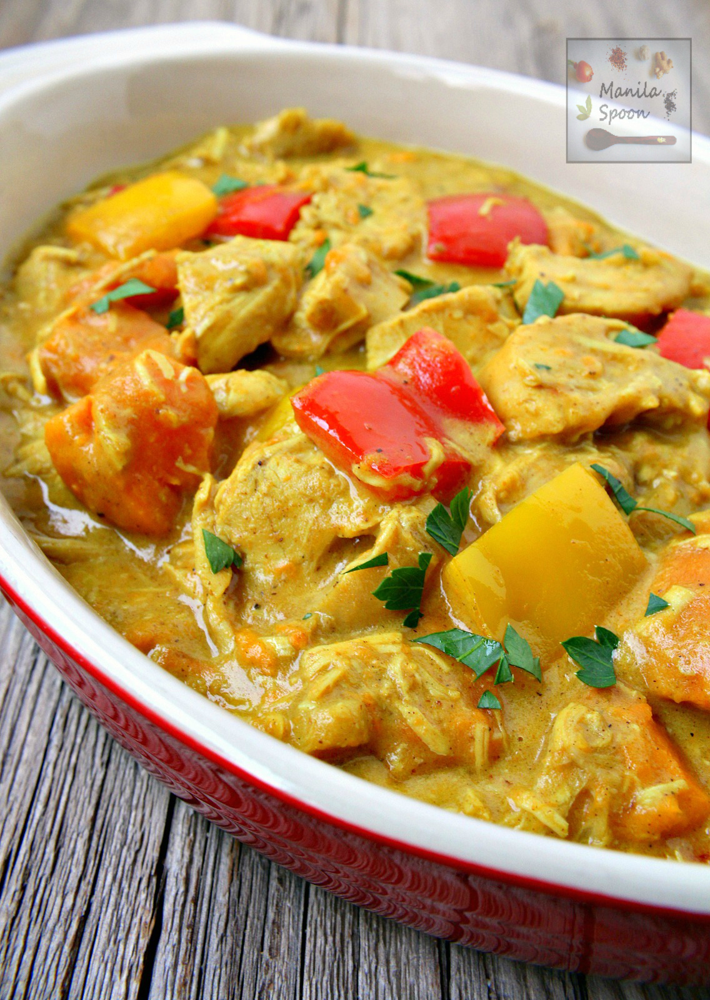

Filipino Chicken Curry

This version of Chicken Curry is my comfort food growing up. It is one of the best meals of all time
Ingredients
- 2 lbs of chicken, cut into serving pieces
- 1 tbs of curry powder
- 1 piece of potato cubed
- 2 cloves of garlic minced
- 2 stalks of celery sliced
- 1 pc red bell pepper sliced
- 2 pcs long green pepper
- 1 pc onion chopped
- 2 thumbs ginger cut into strips
- 2 cups of coconut milk
- 1/2 cup of all-purpose cream optional
- 1 cup of water
- fish sauce and ground black pepper to taste
Instructions
- Heat oil in a pan. Fry potato for a minute per side. Remove from the pan, set to the side
- Using the remaining oil, saute garlic, onion, celery and ginger until onion softens
- Add the chicken pieces. Saute until the outer part of the chicken turns light brown
- Add 1 tbsp of fish sauce. Continue sauteing for 1 minute
- Pour in coconut milk and water. Let boil
- Add curry powder. Stir until powder is completely diluted.
- Continue cooking between low to medium heat until the liquid reduces to half
- Add the red bell pepper and pan fried potatoes, cook for 5 minutes
- Season with fish sauce and ground black pepper as needed. You can also add all-purpose cream if desired
- Transfer to the serving bowl and enjoy!